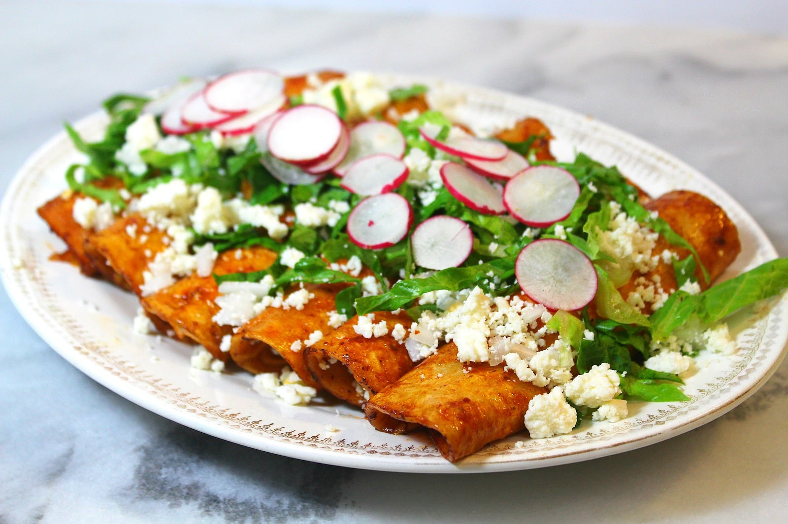

Receta de enchiladas

Ingredientes:
- 12 tortillas de maíz
- 2 pechugas de pollo cocidas y desmenuzadas
- 2 tazas de queso rallado
- 1 cebolla blanca en rodajas finas
- 1/2 taza de crema agria
- 1/2 taza de cilantro fresco picado
- 1/4 taza de aceite vegetal
- Sal y pimienta al gusto
- Salsa de enchilada (puedes usar una enlatada o hacerla casera)
Instrucciones:
- En un sartén grande, calienta el aceite a fuego medio-alto. Agrega la cebolla y cocina hasta que esté dorada y suave.
- Agrega el pollo desmenuzado y cocina durante unos minutos hasta que esté caliente.
- Agrega la mitad del queso rallado y mezcla hasta que se derrita y esté bien combinado con el pollo y la cebolla. Agrega sal y pimienta al gusto.
- Calienta las tortillas en una plancha o sartén caliente hasta que estén suaves y flexibles.
- Rellena cada tortilla con una porción de la mezcla de pollo y queso, enrolla y coloca en una fuente para hornear.
- Vierte la salsa de enchilada sobre las enchiladas y espolvorea el queso rallado restante encima.
- Hornea en el horno precalentado a 180°C durante unos 15-20 minutos, o hasta que el queso se derrita y las enchiladas estén calientes y burbujeantes.
- Sirve las enchiladas calientes, acompañadas de crema agria y cilantro fresco picado.
¡Que las disfrutes!